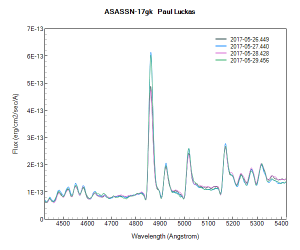
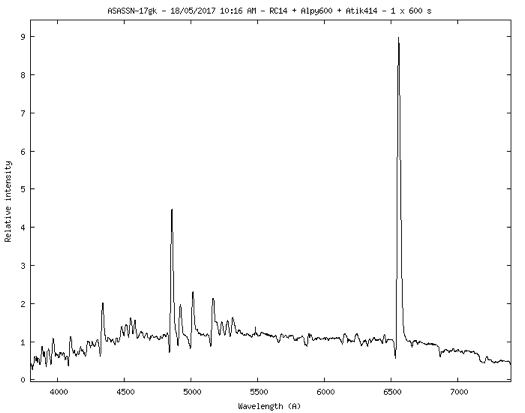
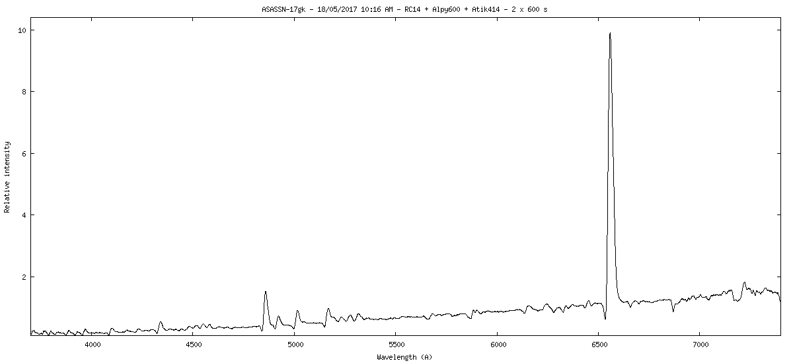
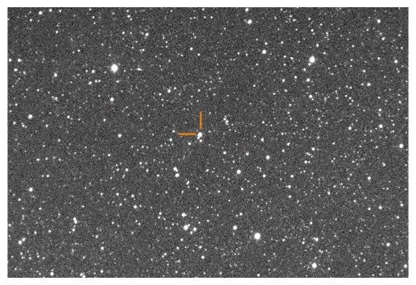
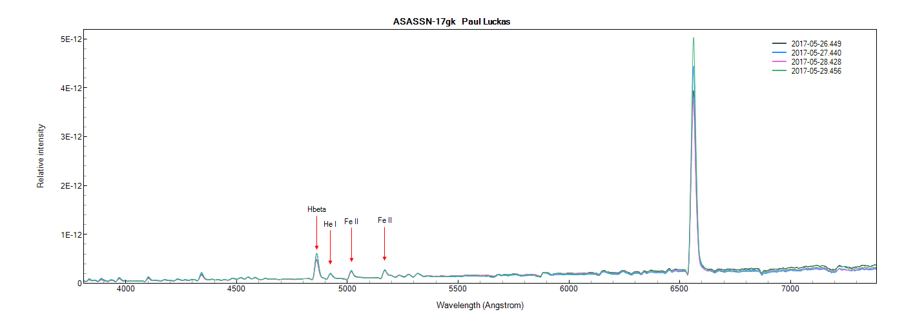
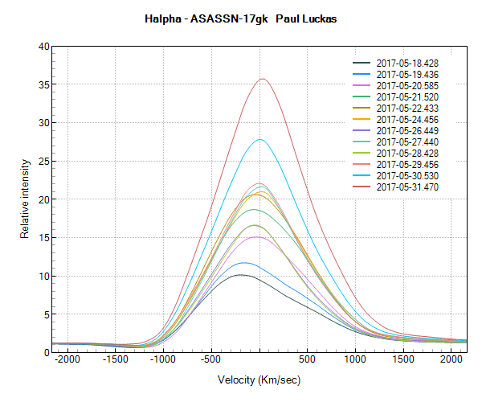
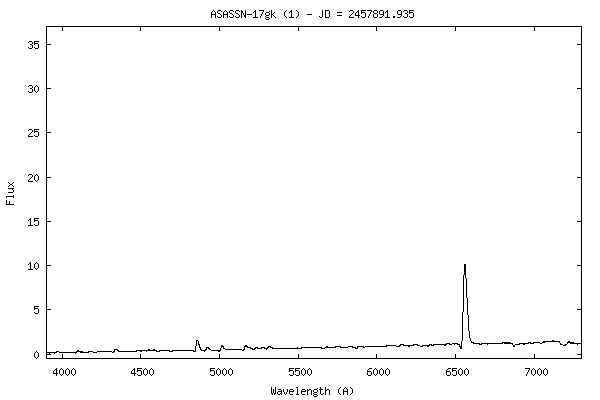
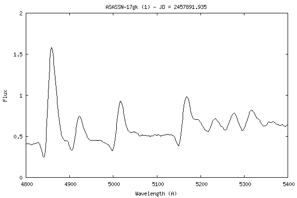

Nova ASASSN-17gk (ATel #10387) was confirmed at Shenton Park Observatory using the ALPY 600 at R~530. This very bright nova in Centaurus is near maximum and was easily identified with a 600s exposure. Further detail kindly provided by Prof. Steve Shore can be found in the confirmation ATel (ATel #10399) and subsequent correction (ATel #10400).

B and V band images were acquired subsequent to the spectra under increasingly cloudy conditions. Photometry yielded magnitudes:
B= 11.78 (transformed)
V=10.70 (transformed)
Expand to read more ...
Confirmation Spectra:


Photometric image:

Spectrophotometry (flux calibrated profiles), derived from transformed V-band photometry taken adjacent in time to the spectra (click to enlarge):

Velocity plot of the H-a emission:

Two Animated GIF files showing development of the H-a and Fe features in 12 spectra spanning May 18 to 31:

